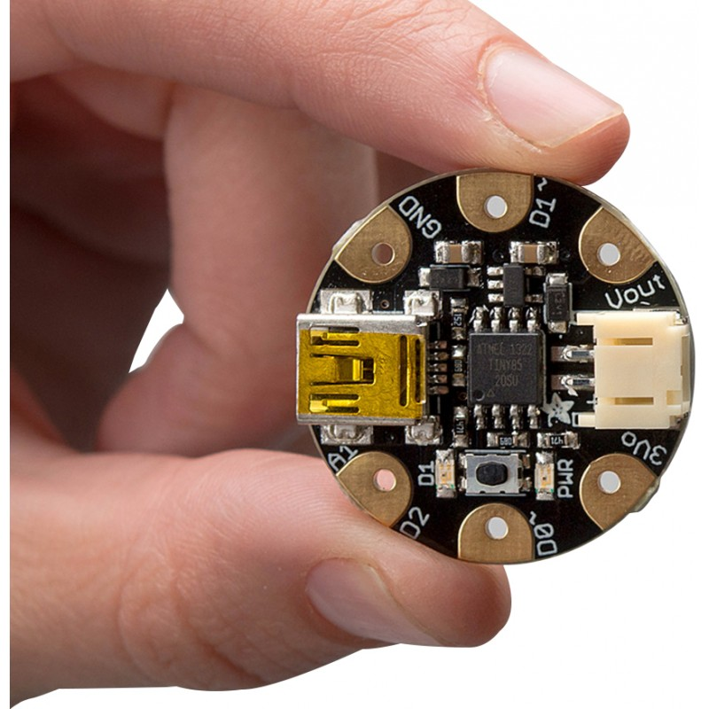
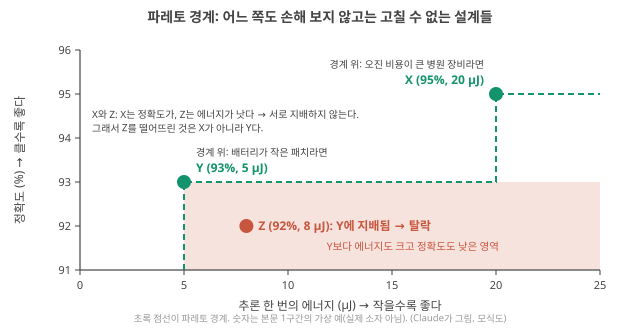
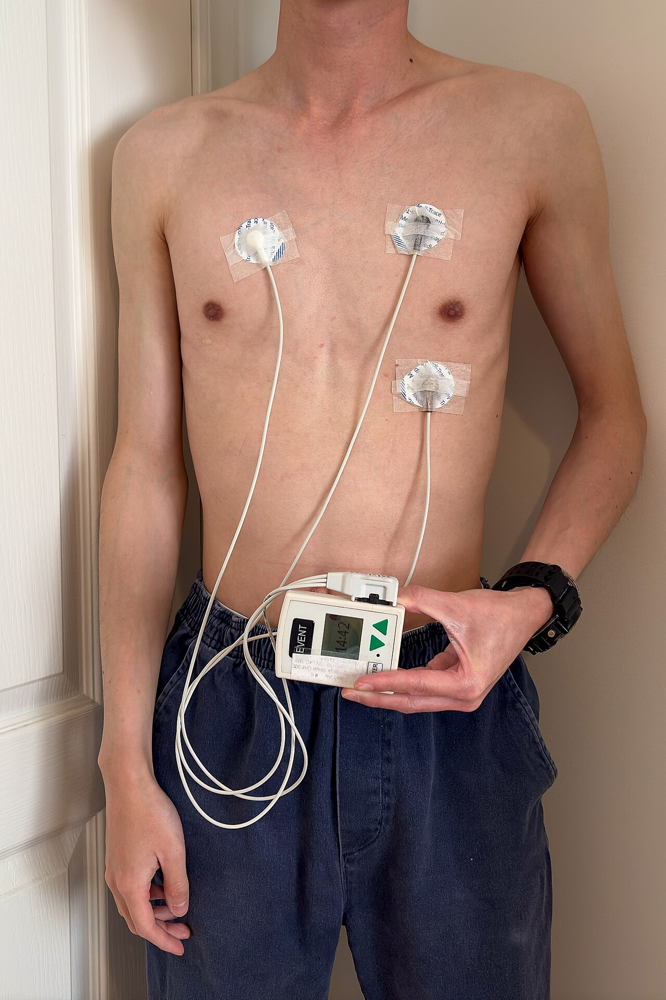
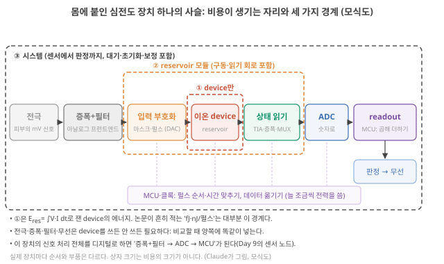
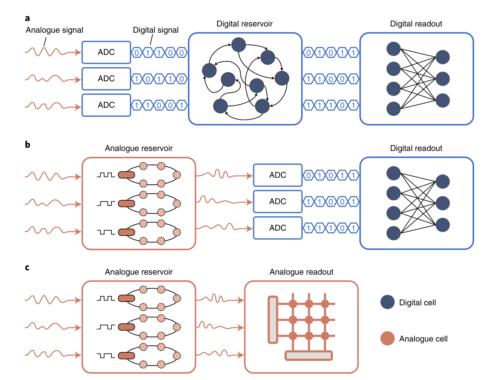
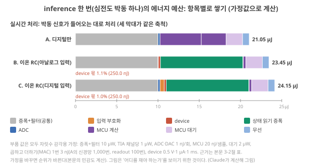
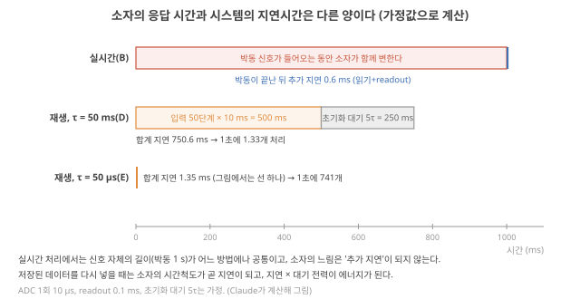
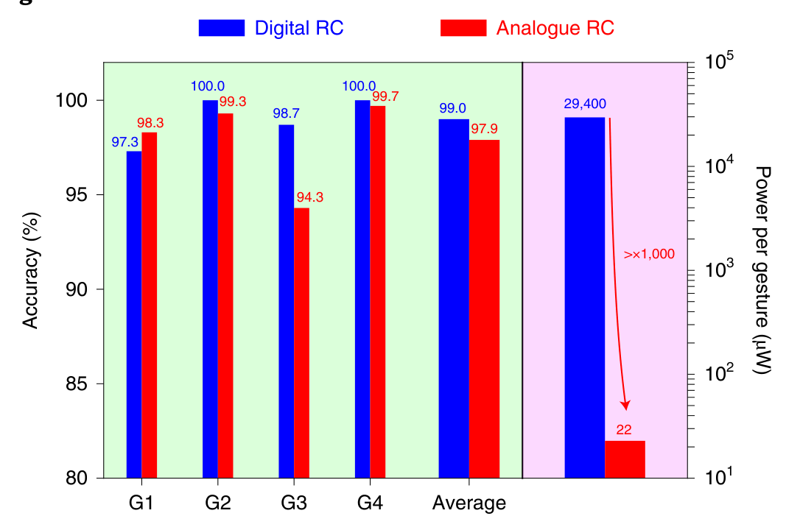
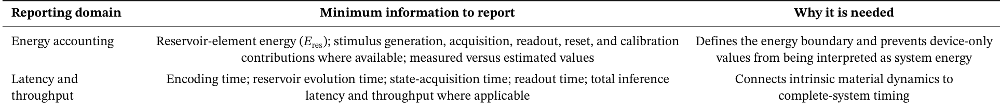

D17. 정확도만으로 충분한가? 시스템 전체의 비용은 무엇인가?
Phase 3 · 좋은 시스템이란 무엇인가 · 11월 9일 (월)
답에 들어가야 할 것 — 소자 수준 energy/op 대 시스템 수준, latency, 입력 인코딩·측정·ADC·readout의 숨은 비용
기본 경로: ① 사전 테스트(권장) → ② 학습자료(구간마다 잠깐 점검까지) → ③ 백지 회상 → ④ 가르치듯 내 답. ⓪·⑤와 접힌 '심화'·'추가 연습'은 선택입니다. 한 번에 끝낼 필요 없이 구간 단위로 나눠 읽어도 되고, 다시 열면 '지난번 읽던 곳' 링크가 뜹니다.
① 사전 테스트와 먼저 만들어 보기
아직 배우지 않은 내용을 먼저 풀어 봅니다. 많이 틀리는 것이 정상이고, 그게 목적입니다. 먼저 답해 본 문제는 읽을 때 눈에 들어오고 더 오래 남습니다. 문제마다 정답만 보이고, 이유는 학습자료와 ⑤ 다시 풀기에서 봅니다. 다 풀면 학습자료가 열립니다. 건너뛰려면 학습자료 위의 '그냥 읽기'를 누르세요(권장 단계일 뿐 필수는 아닙니다).
② 학습자료
어제까지 우리는 소자가 계산에 쓸모 있는지를 정확도로 따졌습니다. 기억이 과제의 시간척도에 맞는지(D13), 상태가 서로 다른 방향으로 펼쳐지는지(D14), 벤치마크가 무엇을 시험하는지(D15), 그리고 무엇과 비교해야 정확도 숫자가 뜻을 갖는지(D16). 오늘은 질문을 하나 더 붙입니다. 같은 정확도라면, 그 답을 얻는 데 시스템 전체가 얼마를 썼는가? 물리 reservoir computing(RC: 고정된 물리계인 reservoir가 입력을 상태로 바꾸고, 상태에서 답을 꺼내는 마지막 곱셈·덧셈 층인 readout만 데이터로 학습하는 방식, D7)을 하는 논문의 상당수는 "저전력"을 동기로 씁니다. 오늘은 그 말을 숫자로 검사하는 방법을 배웁니다.
- 정확도 말고 무엇을 재야 하나? '추론 한 번의 에너지', '지연시간', '처리율'은 각각 무엇인가?
- 실제 감지 장치에서 비용은 어디서 생기나? 소자는 그 사슬의 어디에 있나?
- 추론 한 번의 에너지를 항목별로 쌓아 보면 소자는 전체의 몇 %인가?
- 소자가 느리면 시스템은 얼마나 느려지나? 소자의 응답 시간과 시스템의 지연시간은 어떻게 다른가?
- 논문에 적힌 fJ·nJ·µW 숫자들을 서로 비교해도 되나?
- 그래서 논문에서 무엇을 확인하고, 내 연구에서 무엇을 재야 하나?
1. 정확도 옆에 붙여야 하는 숫자들
이 구간을 읽고 나면 '추론 한 번의 에너지·지연시간·처리율·보정 비용'이 각각 무엇을 세는 양인지 단위와 함께 말할 수 있고, 전력이 작은 것과 에너지가 작은 것이 왜 다른지 숫자로 보일 수 있다.
어떤 문제 때문에 필요한가. 두 연구실이 같은 심전도 부정맥 판별 과제에서 똑같이 96%를 냈다고 합시다. 한쪽은 이온 소자 열 개와 소스미터 두 대, PC 한 대를 썼고, 다른 쪽은 손톱만 한 마이크로컨트롤러 하나로 같은 일을 했습니다. 정확도만 보면 둘은 같습니다. 그러나 둘 중 어느 쪽을 환자의 가슴에 붙일지는 정확도가 정하지 않습니다. 배터리가 며칠 가는지, 판정이 얼마나 빨리 나오는지, 장치가 얼마나 작은지, 몇 주에 한 번 다시 맞춰 줘야 하는지가 정합니다. 이것들이 오늘의 "시스템 비용"입니다.

시스템 비용: 정확도 옆에 붙이는 다섯 숫자
먼저 앞에서 배운 두 단어를 다시 꺼냅니다. 에너지[J]는 일을 한 총량이고, 전력[W = J/s]은 1초에 쓰는 에너지입니다(D2 기초: 에너지와 전력). 그리고 "효율"이라고 부를 수 있는 양은 전력이 아니라 작업 하나에 든 에너지 = 전력 ÷ 처리율이었습니다(D3 기초: 작업당 에너지). 오늘은 이 '작업 하나'를 RC 시스템의 언어로 바꿉니다.
추론(inference)은 학습이 끝난 readout으로 새 입력 하나에 답 하나를 내는 일입니다(readout의 가중치, 즉 상태에 곱하는 숫자들을 데이터로 정하는 일인 학습과 구별합니다, D7 기초: 학습). 심전도라면 박동 하나를 받아 "정상/부정맥"을 내는 것, 손글씨라면 그림 한 장을 받아 숫자 하나를 내는 것이 추론 한 번입니다. 이제 정확도 옆에 붙일 다섯 숫자는 다음과 같습니다.
- 추론 한 번의 에너지 [J/추론]: 입력 하나가 들어와 답 하나가 나올 때까지 시스템 전체가 쓴 에너지. 소자 하나가 아니라 센서부터 판정까지.
- 지연시간(latency) [s]: 입력이 들어온 시점(또는 입력이 끝난 시점 — 어느 쪽인지 밝혀야 합니다)부터 답이 나올 때까지 걸린 시간.
- 처리율(throughput) [추론/s]: 1초에 끝낼 수 있는 추론의 개수. 지연시간의 역수와 같을 수도 있고, 여러 개를 동시에 처리하면 더 클 수도 있습니다.
- 면적·부품 수: 장치가 차지하는 크기, 필요한 회로 채널의 수.
- 보정·재학습 비용: 소자가 시간에 따라 변하면 readout을 다시 맞춰야 합니다. 그 에너지와 시간을 그 사이의 추론 횟수로 나눠 추론 한 번에 얹습니다(6구간).
작은 숫자로. 소자 시스템 X는 1 µW로 동작하지만 추론 한 번에 2 s가 걸리고, 시스템 Y는 100 µW를 쓰지만 1 ms면 끝납니다.
- X: 1 µW × 2 s = 2 µJ/추론
- Y: 100 µW × 0.001 s = 0.1 µJ/추론
여기서 '전력 × 걸린 시간'으로 센 것은 두 시스템이 한 번에 추론 하나만 처리한다고 보았기 때문입니다. 그러면 처리율 = 1 ÷ 지연시간이므로 D3의 '전력 ÷ 처리율'과 같은 값이 나옵니다(X: 1 µW ÷ 0.5 추론/s = 2 µJ/추론, 단위는 (J/s) ÷ (추론/s) = J/추론). 여러 개를 동시에 처리한다면 전력 ÷ 처리율로 셉니다.
전력은 X가 100배 작은데, 추론 한 번의 에너지는 Y가 20배 작습니다. 전력이 작다는 것과 일 하나를 싸게 한다는 것은 다른 말이고, 둘을 잇는 것이 지연시간입니다. 느린 소자일수록 이 차이가 커집니다(4구간).
이름과 정확한 뜻 — 리뷰가 쓰는 지표들. Roadmap 리뷰는 생체 모방 계산 하드웨어의 성능 지표로 처리율, 집적 밀도(면적당 소자 수), 다양성(돌릴 수 있는 응용의 폭), 정확도, 전력 소비를 꼽고, 과제에 따라 전력이 크게 달라지므로 TOPS/W, 추론당 에너지(energy per inference), 스파이크(뉴런이나 뉴런 회로가 내는 짧은 전압 펄스, D3 기초 7) 연산당 에너지 같은 결합 지표를 쓴다고 정리합니다. 그리고 이 지표들이 "아직 진화 중"이라 공정하고 포괄적인 벤치마크 절차가 필요하다고 씁니다. Roadmap 2026, p.8136 같은 쪽에서, 특정 데이터셋의 분류 정확도 같은 기준이 이런 하드웨어 평가에 적절하거나 충분한지에 대해 "현재 분야 안에 합의가 없다"고도 적습니다. Roadmap 2026, p.8136
TOPS는 tera operations per second, 즉 1초에 10¹²번의 연산입니다. TOPS/W는 그것을 전력으로 나눈 값이니 단위를 풀면 (10¹² op/s)/(J/s) = 10¹² op/J, 즉 1 J로 연산을 몇 조 번 하나입니다. 여기서 조심할 점이 둘 있습니다. 첫째, "연산 하나(op)"를 어떻게 세는지가 구조마다 다릅니다. 디지털 칩의 곱셈 한 번과 아날로그 소자의 전류 합산 한 번은 같은 op로 세기 어렵습니다. 둘째, 과제 하나에 연산이 몇 번 드는지는 모형마다 다릅니다. 그래서 TOPS/W가 높아도 같은 과제의 추론 한 번 에너지가 작다는 보장은 없습니다. 해석
왜 RC 연구에서 특히 중요한가. Liang 리뷰는 기존 연구를 비교한 뒤, 물리 RC의 결과는 정확도·오차율 면에서 받아들일 만하지만 최신 경사 하강 기반 신경망보다 낫지는 않고, 하드웨어 잡음 때문에 같은 구성이면 소프트웨어 RC가 대개 더 낫다고 정리합니다. 그리고 물리 RC의 장점은 정확도가 아니라 시스템 복잡도, 전력 소비, 학습 비용, 계산 속도 등에 있다고 씁니다. Liang 2024, p.201 같은 리뷰는 전망 절에서 "디지털 RC보다 자원을 더 쓰는 물리 RC는 무의미하다"고까지 씁니다. Liang 2024, p.202 즉 물리 RC를 하는 이유가 정확도가 아니라 비용이라면, 비용을 재지 않은 논문은 자기 동기를 검증하지 않은 셈입니다. 해석
정확도와 비용은 함께 본다. 정확도를 조금 내주고 에너지를 크게 줄이는 설계가 있고, 그 반대도 있습니다. Singh 2026은 정확도·안정성·지연시간·에너지를 동시에 최적화할 수 없을 때 그 상충을 직접 보여 줘야지, 임의로 합친 점수 하나로 줄이면 안 된다고 씁니다. Singh 2026, p.14 최종 비교는 반응 지도나 파레토 상충(Pareto trade-off)으로 나타내는 편이 낫다고도 씁니다. Singh 2026, p.8
파레토 상충을 숫자로 봅니다. 세 설계가 있습니다. X(정확도 95%, 20 µJ/추론), Y(93%, 5 µJ), Z(92%, 8 µJ). 좋은 방향은 정확도는 높을수록, 에너지는 작을수록입니다. 두 설계씩 짝지어 "한쪽이 두 지표 모두에서 같거나 낫고, 적어도 하나에서는 확실히 나은가"를 봅니다. 그런 관계를 지배한다(dominate)고 합니다.
- Y와 Z: Y가 정확도도 높고(93 > 92) 에너지도 작습니다(5 < 8). Y가 Z를 지배하므로, 어떤 응용에서도 Z를 고를 이유가 없어 탈락입니다.
- X와 Y: X는 정확도가, Y는 에너지가 낫습니다. 어느 쪽도 다른 쪽을 지배하지 않습니다.
- X와 Z: X는 정확도가, Z는 에너지가 낫습니다(8 < 20). 여기도 지배 관계가 없습니다. Z를 떨어뜨린 것은 X가 아니라 Y입니다.
누구에게도 지배당하지 않고 남은 설계들(X, Y)의 모임이 파레토 경계(Pareto front)입니다. 아래 그림 0에서는 두 점을 계단 모양 선으로 이어, 그 선의 오른쪽 아래는 누군가에게 지배당하는 영역임을 보입니다. 경계 위의 둘 중 무엇을 고를지는 응용이 정합니다. 배터리가 작은 패치라면 Y, 오진 비용이 큰 병원 장비라면 X. "정확도 × 0.7 + 효율 × 0.3" 같은 점수는 이 판단을 숨깁니다.

전력 10 µW로 추론 한 번에 0.5 s가 걸리는 장치와, 전력 1 mW로 추론 한 번에 2 ms가 걸리는 장치 중 추론 한 번의 에너지가 작은 쪽은 어디일까요? 계산한 뒤 아래 점검으로 확인하세요.
- 추론 (inference)
- 학습이 끝난 readout으로 새 입력 하나에 답 하나를 내는 일. 학습(가중치 정하기)과 구별한다.
- 추론 한 번의 에너지 [J/추론]
- 입력 하나에서 답 하나까지 시스템 전체가 쓴 에너지. "효율"의 정확한 뜻.
- 지연시간 (latency) [s] / 처리율 (throughput) [추론/s]
- 답이 나올 때까지의 시간(시작·끝 시점을 밝힌다) / 1초에 끝내는 추론 수.
- TOPS/W
- 10¹² op/J. 연산을 세는 방식과 과제당 연산 수가 다르면 추론당 에너지와 바로 이어지지 않는다.
- 파레토 경계
- 어느 한 지표도 나빠지지 않고는 다른 지표를 좋게 할 수 없는 설계들의 모임. 그 위의 선택은 응용이 정한다.
- 정확도 옆에 붙일 숫자: 추론 한 번의 에너지[J], 지연시간[s], 처리율[추론/s], 면적·부품 수, 보정·재학습 비용.
- 전력이 작아도 오래 걸리면 에너지는 크다: 1 µW × 2 s = 2 µJ > 100 µW × 1 ms = 0.1 µJ.
- 물리 RC의 장점은 정확도가 아니라 시스템 복잡도·전력·학습 비용·속도에 있다는 것이 Liang의 정리다 Liang 2024, p.201. 그렇다면 비용을 재야 동기가 검증된다 해석.
- 상충은 합친 점수가 아니라 파레토 경계로 보인다 Singh 2026, p.8, 14. 남은 질문: 그 비용은 장치의 어디에서 생기나? → 2구간.
2. 실제 감지 사슬에서 비용이 생기는 자리
이 구간을 읽고 나면 몸에 붙이는 심전도 장치를 예로 전극부터 판정까지의 부품을 순서대로 말할 수 있고, 아날로그 프런트엔드·입력 부호화·상태 읽기·ADC·readout이 각각 어디에 있으며 소자를 쓰든 안 쓰든 남는 부분이 어디인지 짚을 수 있다.
왜 사슬을 먼저 그리나. "소자가 fJ로 계산한다"는 문장은 소자 하나만 보고 있습니다. 그런데 소자는 혼자 일하지 않습니다. 앞에서 누군가 신호를 소자가 받아들일 수 있는 전압 펄스로 바꿔 줘야 하고, 뒤에서 누군가 소자의 상태를 읽어 숫자로 바꾸고 readout 계산을 해야 합니다. 그 '누군가'들이 모두 에너지와 시간을 씁니다. 그래서 비용을 따지려면 먼저 사슬 전체를 그리고, 각 고리에 이름을 붙이는 것부터 합니다.
예로 쓸 장치. 가슴에 붙여 심장 박동 하나하나를 정상/부정맥으로 판정하는 패치입니다. D15에서 심전도를 배웠습니다. 심전도(ECG)는 심장이 뛸 때마다 피부 위 두 전극 사이에 생기는 작은 전압 변화(mV 수준)를 시간에 따라 기록한 것이고, 기저선이 천천히 흔들리는 잡음, 전원선의 50/60 Hz 잡음, 근육 잡음이 섞여 있어 거르고 나서 박동 단위로 잘라 씁니다(D15 기초: 심전도). 그 거르는 장치가 필터, 즉 신호에서 원하는 빠르기(주파수)의 성분만 남기고 나머지를 줄이는 회로나 계산이었습니다(D15 기초: 필터). 오늘은 그 사슬에 이온 소자 reservoir를 끼워 넣었을 때 생기는 부품을 순서대로 봅니다.

1 — 전극. 피부에 닿아 mV 수준의 심장 전압을 받습니다. 이 신호는 연속적으로 변하는 아날로그 값입니다(D3 기초 1). [미확인: 정확한 진폭은 사람·전극 위치마다 다름]
2 — 아날로그 프런트엔드(증폭 + 필터). 전극의 mV 신호는 너무 작고 잡음이 많아 그대로 쓸 수 없습니다. 증폭기가 신호를 수백–수천 배 키우고, D15의 필터가 기저선 흔들림(아주 느린 성분)과 50/60 Hz 전원 잡음을 줄입니다. 신호를 숫자로 바꾸기 '앞'에 있는 이 아날로그 회로 묶음을 아날로그 프런트엔드(analog front-end, AFE)라고 부릅니다. 여기서 중요한 점: 이 부분은 소자를 쓰든 안 쓰든 필요합니다. 디지털로만 처리하는 장치도 전극과 증폭·필터는 똑같이 가집니다. 해석 [미확인: 배율·전력 수치]
3 — 입력 부호화. 거른 신호를 소자가 받을 수 있는 전압 펄스로 바꿉니다. 길이 둘입니다. (가) 아날로그 경로: 증폭된 신호를 스위치와 작은 구동 증폭기(드라이버: 들어온 전압의 모양은 그대로 두고, 소자가 끌어가는 전류를 대신 대 주는 증폭기. D4 6구간의 '드라이버')로 바로 소자에 걸면서 마스크(입력 하나를 정해진 무게들로 퍼뜨려 여러 소자에 다르게 주는 것, D10 기초: 마스크)를 곱합니다. (나) 디지털 경로: 먼저 ADC로 신호를 숫자로 바꾸고, MCU가 마스크를 곱한 뒤, DAC(숫자 → 전압 변환기)가 펄스를 만듭니다. ADC와 DAC는 D4에서 본 "숫자와 전압 사이의 통역"입니다(D4 기초 5: ADC). 실험실 시연은 대개 (나)처럼 측정 장비나 보드가 펄스를 만듭니다. 해석
4 — 이온 소자(reservoir). 펄스를 받아 전도도(전류가 얼마나 잘 흐르는가)나 전압이 변하고, 그 변화가 과거 입력을 조금씩 품습니다. 이 소자에 직접 들어가는 에너지가 논문이 보통 적는 "소자 에너지"입니다(3구간에서 계산).
5 — 상태 읽기. 소자의 상태는 대개 전류로 나옵니다(작은 읽기 전압을 걸었을 때 흐르는 전류). 이 전류를 전압으로 바꿔 키우는 증폭기가 D4 crossbar의 가로줄 끝에서 본 TIA(transimpedance amplifier, 트랜스임피던스 증폭기)입니다(D4 2구간 ④).
이름 속의 임피던스(impedance, Z)는 저항을 교류로 넓힌 양입니다. 사인파 전압을 걸었을 때 '전압 진폭 ÷ 전류 진폭'[Ω]과, 전류가 전압보다 얼마나 늦거나 앞서는지(위상)를 함께 담습니다. 전기화학 임피던스 분광법(EIS)에서 작은 교류 전압을 주파수를 바꿔 가며 걸고 흐르는 전류를 재어 구하던 바로 그 양입니다. 보통의 임피던스는 같은 두 단자의 전압과 전류를 나누지만, TIA는 입력 쪽으로 전류를 받아 출력 쪽에 전압을 내므로 '건너편(trans-) 전압 ÷ 이쪽 전류'이고 단위는 역시 Ω입니다. D4에서 본 대로 출력 전압 = 입력 전류 × 되먹임 저항 \(R_f\)이니, \(R_f\)가 곧 TIA의 배율입니다(\(R_f\) = 1 MΩ이면 1 µA → 1 V, 10 nA를 1 V로 키우려면 100 MΩ). EIS를 재는 전기화학 분석기(포텐쇼스탯)도 전류를 저항과 증폭기로 전압으로 바꾸고, '전류 범위'를 고르는 일이 그 저항을 바꾸는 일입니다 [확인: Ossila "Potentiostat circuit diagram" 안내 페이지, 2026-10-25 열람]. [해석: 둘이 같은 원리라는 연결]
소자가 여러 개면 채널마다 TIA가 하나씩 있거나, 여러 채널을 차례로 골라 한 선으로 보내는 스위치 MUX(multiplexer)를 씁니다. TIA는 소자의 상태를 읽어야 하는 동안 내내 켜져 있어야 합니다. 왜냐하면 TIA의 중심 부품은 연산 증폭기(operational amplifier, op-amp: 두 입력 전압의 차이를 아주 크게 키우는 범용 증폭 칩. \(R_f\) 같은 되먹임 부품을 붙여 원하는 배율을 만든다)라는 능동 회로라서 신호가 있든 없든 켜져 있는 동안 전원에서 일정한 전류(정지 전류)를 끌어 쓰고, (1) 펄스가 들어오는 동안 소자의 한쪽 단자를 0 V 근처로 붙들어(가상 접지, D4) 소자에 걸리는 전압을 정해 주며, (2) 켜자마자 정확한 값을 내지 못하고 안정될 시간이 필요하기 때문입니다. 읽는 순간에만 켜는 방식(듀티 사이클링)은 3구간의 비용을 줄이는 설계 선택지이지만 오늘 예에서는 가정하지 않습니다. 해석
6 — ADC. 다음 단계(readout)가 디지털이면, 읽은 전압을 숫자로 바꿉니다. 다음 단계도 아날로그라면(예: 상태 전압을 비휘발 소자 배열에 바로 걸어 곱해 더하는 아날로그 readout) 이 자리의 ADC는 없어도 됩니다. D4에서 본 대로 ADC는 "다음 단계가 디지털일 때" 필요합니다.
7 — readout과 판정. 숫자로 바뀐 상태들에 학습한 가중치를 곱해 더하는 계산(MAC, 곱 1번 + 덧셈 1번, D2 3구간)을 MCU가 하고, 가장 큰 값을 답으로 고릅니다. 결과는 무선으로 휴대전화에 보냅니다.
늘 켜져 있는 것. 이 모든 순서를 정하고 시간을 재는 MCU(마이크로컨트롤러: 작은 계산기·기억장치·ADC·통신 회로를 한 칩에 넣은 범용 제어기, D5 기초 1: 센서 노드)와 클록(회로 전체가 맞추는 박자, D2 기초), 전원 회로가 있습니다. 일을 하지 않는 순간에도 조금씩 전력을 씁니다.

원문 그림을 읽기 전에. 아래 Zhong 2022의 Fig. 1은 RC 시스템을 세 종류로 나눈 그림입니다. 세 줄을 위에서 아래로 읽으며 ADC 상자가 어디에 몇 개 있는지만 세어 보세요. 주황(분홍) 물결선은 아날로그 신호, 파란 육각형 줄의 0·1은 디지털 숫자입니다.

원문이 말하는 비용. Zhong 2022는 완전 디지털 RC에서 아날로그 신호를 디지털 입력으로 바꾸는 추가 ADC가 "전력을 요구하고 지연을 들여온다"고 쓰고, 혼합형도 reservoir와 readout 사이에 ADC와 레지스터 같은 디지털 부품이 필요하다고 씁니다(레지스터: 계산 직전의 값을 잠깐 붙잡아 두는 작은 디지털 저장소, D2 기초). Zhong 2022, p.673 그래서 저자들은 (c)를 만들었습니다.
그런데 그 "완전 아날로그" 시스템의 실제 구성을 보면, 전원 모듈과 MCU가 있고 MCU는 제어 신호를 만들고 데이터 전송을 맡습니다. reservoir 모듈은 마스크 과정과 신호 전달을 위해 증폭기와 MUX 같은 주변회로를 쓰며, 저자들은 소자 하나와 그 주변회로를 합쳐 물리 노드 하나로 취급합니다. Zhong 2022, p.674 Methods에는 증폭기가 TIA와 적분기(전류를 시간에 따라 쌓아 전압으로 만드는 회로) 역할을 하고, 증폭기의 이득(몇 배로 키우나)과 바이어스 전압(신호에 늘 더해 두는 기준 전압)을 디지털 가변저항(숫자로 값을 정하는 저항)으로 조정한다고 적혀 있습니다. Zhong 2022, p.679 readout 쪽 적분기의 출력은 시간 단계마다 끝에서 한 번 샘플링됩니다. Zhong 2022, p.677 즉 "완전 아날로그"는 reservoir와 readout 사이의 ADC를 없앴다는 뜻이지, 디지털 부품과 주변회로가 없다는 뜻이 아닙니다. 해석 이것은 그 논문의 잘못이 아니라, 경계를 정확히 읽어야 한다는 예입니다.
"계산은 소자가 하니 주변회로는 부수적이다" — 계산의 '물리'는 소자가 하지만, 그 물리를 쓸 수 있게 만드는 일(펄스를 만들기, 상태를 읽기, 숫자로 바꾸기, 시간을 맞추기)은 주변회로가 합니다. Zhong 2022가 노드를 "소자 + 주변회로"로 정의한 것도 그래서입니다 Zhong 2022, p.674. 3구간에서 보듯, 에너지는 오히려 주변회로 쪽에 몰리기 쉽습니다.
내 소자의 측정 셋업을 이 사슬에 겹쳐 보세요. 펄스는 무엇이 만드나요(함수 발생기, 소스미터, DAQ 보드)? 상태는 무엇이 읽나요? 그 장비들이 실제 장치에서는 어떤 칩으로 바뀌어야 하나요? 각 고리에 "실험실 장비 → 장치 부품" 짝을 한 줄씩 적어 보세요. 짝을 지을 수 없는 고리가 있다면 그것이 오늘의 '아직 모르는 것'입니다.
- 아날로그 프런트엔드 (AFE)
- 전극·센서 바로 뒤의 증폭기와 필터 묶음. 신호를 숫자로 바꾸기 '앞'의 아날로그 회로. 소자를 쓰든 안 쓰든 필요하다.
- 입력 부호화
- 신호를 소자가 받을 펄스로 바꾸는 일. 아날로그 경로(스위치·구동 증폭기로 직접)와 디지털 경로(ADC → MCU 마스크 → DAC)가 있다.
- 임피던스 (impedance, Z)
- 교류에서의 '전압 ÷ 전류'[Ω]와 위상. EIS가 재는 양.
- TIA / MUX
- 전류를 전압으로 바꿔 키우는 트랜스임피던스 증폭기(출력 전압 ÷ 입력 전류 = \(R_f\) [Ω]) / 여러 채널 중 하나를 골라 한 선으로 보내는 스위치. TIA는 상태를 읽는 동안 켜져 있어 정지 전류를 쓴다.
- 완전 디지털 / 혼합형 / 완전 아날로그 RC
- ADC가 맨 앞 / reservoir와 readout 사이 / 그 사이에 없음. '완전 아날로그'도 MCU·주변회로는 있다 Zhong 2022, p.673–674.
- 심전도 장치의 사슬: 전극 → 증폭+필터(AFE) → 입력 부호화 → 소자 → 상태 읽기(TIA·MUX) → ADC → readout(MCU) → 판정·무선, 그리고 늘 켜진 MCU·클록.
- AFE·전극·무선은 소자를 쓰든 안 쓰든 필요하다. 비교할 때 양쪽에 똑같이 넣는다 해석.
- ADC는 다음 단계가 디지털인 자리마다 생긴다. Zhong 2022의 '완전 아날로그'는 reservoir–readout 사이의 ADC를 없앤 것이고, MCU·증폭기·MUX·디지털 가변저항은 남아 있다 Zhong 2022, p.673–674, 679.
- 남은 질문: 이 고리들이 각각 얼마를 쓰나? → 3구간.
3. 항목별 에너지 예산 짜기
이 구간을 읽고 나면 소자 에너지를 \(E = \int V I\,dt\)로 계산할 수 있고, 가정을 적어 둔 표로 추론 한 번의 에너지 예산을 항목별로 쌓아 소자의 몫이 몇 %인지, 어떤 가정 하나가 결론을 뒤집는지 말할 수 있다.
3-1. 소자 하나의 에너지: 전압 × 전류 × 시간
Singh 2026은 소자 수준의 에너지를 reservoir 요소 에너지 \(E_{res}\)로 부르고, 전기로 구동하는 소자라면 다음 식으로 잴 수 있다고 씁니다. Singh 2026, p.14
\[ E_{res} = \int_{t_0}^{t_1} V(t)\, I(t)\, dt \]
- 왜 지금 필요한가: 논문이 적는 "소자 에너지"가 정확히 무엇을 센 값인지 알아야 시스템 예산의 한 칸에 넣을 수 있습니다.
- 기호: \(V(t)\)는 그 순간 소자에 걸린 전압[V], \(I(t)\)는 그 순간 흐르는 전류[A], \(t_0\)와 \(t_1\)은 센 구간의 시작과 끝[s]. \(\int \ldots dt\)는 "시간을 아주 잘게 잘라, 조각마다 \(V \times I \times\)(조각의 길이)를 구해 다 더하라"는 뜻입니다.
- 단위: V × A × s = W × s = J.
- 계산 순서: 전압과 전류가 펄스 동안 일정하면 적분은 그냥 곱셈 \(V \times I \times t\)가 됩니다. 펄스가 여러 개면 펄스마다 구해 더합니다.
- 결과의 뜻: 소자에 들어간 에너지. Singh는 이것을 펄스를 만드는 회로, 측정·증폭, ADC, readout 계산, 초기화, 반복 보정에 드는 에너지와 구별해 적어야 한다고 씁니다. Singh 2026, p.14
작은 숫자로. 이온 소자에 0.5 V를 1 ms 동안 걸었고 1 µA가 흘렀다면 \(E = 0.5 \times (1 \times 10^{-6}) \times (1 \times 10^{-3}) = 5 \times 10^{-10}\) J = 0.5 nJ입니다. 소자 10개에 박동 하나당 50펄스씩, 즉 500펄스면 500 × 0.5 nJ = 250 nJ = 0.25 µJ. 이 숫자는 [가정]이지만 자릿수는 ms 펄스와 µA 전류를 쓰는 이온 소자에서 나올 법한 범위로 골랐습니다. 해석
3-2. 나머지 고리의 값: 가정을 표로 적는다
시스템 예산을 짜려면 2구간의 고리마다 값을 정해야 합니다. 실제 부품 값은 제품·공정·설계마다 자릿수로 다르고 폴더에 없으므로, 오늘은 가정을 표로 드러내고 그 가정 아래에서 계산합니다. 숫자보다 구조(어떤 항목이 무엇에 비례하는가)를 보는 연습입니다.
먼저 단위: 항목은 두 종류다. 부품이 에너지를 쓰는 방식은 둘입니다.
- 켜져 있는 동안 계속 쓰는 항목(증폭기, MCU 대기): 값이 전력 \(P\) [W]로 주어집니다. W = J/s이므로 켜져 있던 시간 \(t\) [s]를 곱하면 s가 지워지고 J이 남습니다. \(E = P \times t\). 예: 10 µW × 1 s = 10 µJ.
- 한 번 할 때마다 쓰는 항목(ADC 변환, 펄스, 무선 비트, 계산): 값이 한 번의 에너지 [J/회]로 주어지고, 횟수를 곱하면 J입니다. \(E = n \times E_1\). 예: 50회 × 1 nJ/회 = 50 nJ.
- 둘은 서로 바뀝니다. 한 번의 에너지에 1초당 횟수(율, 예: 샘플링률 [S/s])를 곱하면 [J/회] × [회/s] = [J/s] = W, 즉 평균 전력입니다. D5에서 센서 노드의 평균 전력을 \(P_{\text{avg}} \approx f_s E_{ADC} + \ldots\)로 구한 방식입니다(D5 2-2: 평균 전력을 세는 법). 예: 250 S/s × 1 nJ = 250 nJ/s = 0.25 µW. 이 전력을 박동 하나(1 s) 동안 쓰면 0.25 µW × 1 s = 0.25 µJ로, "250회 × 1 nJ"과 같은 값입니다.
오늘은 박동 하나 = 추론 한 번에 든 에너지[J/추론]를 세므로, 모든 항목을 박동 하나 동안의 J로 맞춰 더합니다.
계산 조건(모두 [가정]): 박동 하나 = 신호 1 s(분당 60회). 소자 10개, 박동당 50단계(단계당 20 ms)이므로 펄스는 10 × 50 = 500개. readout에 넣는 숫자(특징, feature)는 소자마다 5번 샘플해 50개이므로 상태 ADC는 50회. 디지털 경로의 심전도 샘플링은 250 S/s(1초에 250번 숫자로 바꿈)로, D5 예제의 1,000 S/s보다 낮춰 디지털 쪽(A)에 유리하게 두었습니다.
| 기호 | 항목 | 가정값 | 종류 | 이 값을 고른 이유 (근거) |
|---|---|---|---|---|
| ⓐ | 아날로그 프런트엔드(증폭+필터) | 10 µW | 켜져 있는 동안 | 상용 심전도 프런트엔드 칩보다 낮게 잡았다. 예: MAX30003은 1.1 V에서 85 µW(ADC 포함), AD8232는 공급 전류 170 µA(전형값, 전원 2.0–3.5 V이므로 약 0.3–0.6 mW) [확인: 제조사 제품 페이지·데이터시트 특징 목록을 인용한 검색 결과, 2026-10-25. 데이터시트 표는 직접 대조 안 함]. 세 경로에 똑같이 들어가므로 순위는 바꾸지 못하고 소자의 몫(%)만 바꾼다 |
| ⓑ | MCU 대기·제어(시간 재기, 순서 정하기) | 2 µW | 켜져 있는 동안 | D5의 MSP430 대기 0.4 µA × 3 V ≈ 1.2 µW에 타이머 등을 더해 올렸다 |
| ⓒ | 무선 | 50 nJ/bit, 결과 16 bit | 한 번마다 | D5 그림 3·4와 같다(칩이 전파를 내는 순간 약 16 nJ/bit와 실측 약 400 nJ/bit 사이) |
| ⓓ | ADC 1회 변환 | 1 nJ | 한 번마다 | D5와 같다(MSP430 안의 12 bit ADC로 계산하면 약 1.7 nJ) |
| ⓔ | MCU 샘플 처리(거르기·저장) | 20 nJ/샘플 | 한 번마다 | D5와 같다(박자당 0.3 nJ × 약 67박자) |
| ⓕ | 곱하고 더하기(MAC) 1번 | 3 nJ | 한 번마다 | D5 3구간과 같다(MAC 하나에 10박자 × 0.3 nJ). readout은 특징 50개 × 2클래스 = MAC 100번 → 0.3 µJ. A의 작은 신경망은 가중치 1,000개 → MAC 1,000번 → 3 µJ |
| ⓖ | DAC 1회 변환(펄스 하나) | 1 nJ | 한 번마다 | ADC와 같은 자릿수로 두었다. 근거 데이터 없음 |
| ⓗ | 아날로그 경로의 펄스 구동(스위치·구동 증폭기) | 0.1 nJ/펄스 | 한 번마다 | 숫자 변환이 없으니 DAC보다 10배 작게 두었다. 근거 데이터 없음 |
| ⓘ | 소자 | 0.5 nJ/펄스 | 한 번마다 | 3-1절의 계산(0.5 V, 1 µA, 1 ms) |
| ⓙ | 상태 읽기 증폭(TIA) | 채널당 1 µW | 켜져 있는 동안 | 아주 적은 전류로 동작하는 연산 증폭기 하나가 켜져만 있어도 쓰는 수준. 예: TI TLV8541은 채널당 약 500 nA, 전원 1.7–3.6 V이므로 약 0.9–1.8 µW [확인: TI 제품 페이지, 2026-10-25 열람]. 이온 소자의 nA 전류를 낮은 잡음으로 읽으려면 더 클 수 있다 |
ⓖ·ⓗ는 근거가 없는 순수한 가정이고, 나머지는 위 근거로 자릿수만 맞춘 가정입니다. 실제 장치의 값은 설계마다 다릅니다.
3-3. 세 경로를 쌓아 보기
비교할 경로는 셋입니다. A. 디지털만: AFE → ADC(250 S/s) → MCU가 매 샘플을 거르고 저장한 뒤, 박동마다 작은 신경망으로 판정(D5의 "MCU + 작은 신경망"). B. 이온 RC, 아날로그 입력: AFE 출력을 바로 소자에 펄스로 → TIA → ADC 50회 → readout. C. 이온 RC, 디지털 입력: A처럼 먼저 ADC로 숫자로 바꾼 뒤 DAC로 다시 펄스를 만들어 소자에 넣는 경로(실험실 시연의 흔한 꼴). B를 단계별로 계산합니다. 괄호 안 기호는 3-2절 표의 줄입니다.
단계 1 — 공통 항목. 세 경로 모두에 똑같이 들어가는 것부터 셉니다. AFE(ⓐ) 10 µW × 1 s = 10 µJ. MCU 대기(ⓑ) 2 µW × 1 s = 2 µJ. 무선(ⓒ) 16 bit × 50 nJ/bit = 800 nJ = 0.8 µJ. 합 12.8 µJ.
단계 2 — 입력 부호화와 소자. 펄스 구동(ⓗ) 500회 × 0.1 nJ = 50 nJ = 0.05 µJ. 소자(ⓘ) 500회 × 0.5 nJ = 250 nJ = 0.25 µJ.
단계 3 — 상태 읽기. 실시간 처리에서는 박동이 들어오는 1 s 동안 소자가 계속 변하므로 TIA 10채널도 1 s 내내 켜져 있습니다(2구간 5단계에서 본 이유). TIA(ⓙ) 10채널 × 1 µW = 10 µW이고, 10 µW × 1 s = 10 µJ.
단계 4 — ADC와 readout. 상태 ADC(ⓓ) 50회 × 1 nJ = 50 nJ = 0.05 µJ. readout(ⓕ) MAC 100번 × 3 nJ = 300 nJ = 0.3 µJ.
단계 5 — 합. 12.8 + 0.05 + 0.25 + 10 + 0.05 + 0.3 = 23.45 µJ. 소자의 몫은 0.25 ÷ 23.45 ≈ 1.1%입니다.
A와 C도 같은 방식으로 세면 아래 표가 됩니다. 칸의 숫자는 박동 하나(추론 한 번)의 에너지[µJ]이고, 계산을 함께 적었습니다.
| 항목 (3-2절 기호) | A. 디지털만 | B. 이온 RC, 아날로그 입력 | C. 이온 RC, 디지털 입력 |
|---|---|---|---|
| 공통: AFE ⓐ + 대기 ⓑ + 무선 ⓒ | 10 + 2 + 0.8 = 12.8 | 12.8 | 12.8 |
| 심전도 ADC ⓓ | 250회 × 1 nJ = 0.25 | — | 0.25 |
| MCU 샘플 처리 ⓔ | 250회 × 20 nJ = 5 | — | — |
| 작은 신경망 ⓕ | MAC 1,000번 × 3 nJ = 3 | — | — |
| 입력 펄스 만들기 ⓗ / ⓖ | — | 구동 500 × 0.1 nJ = 0.05 | DAC 500 × 1 nJ = 0.5 |
| 소자 ⓘ | — | 500 × 0.5 nJ = 0.25 | 0.25 |
| 상태 읽기 TIA ⓙ | — | 10 × 1 µW × 1 s = 10 | 10 |
| 상태 ADC ⓓ | — | 50 × 1 nJ = 0.05 | 0.05 |
| readout ⓕ | — | MAC 100번 × 3 nJ = 0.3 | 0.3 |
| 합 [µJ/추론] | 21.05 | 23.45 | 24.15 |
| 소자의 몫 | — | 1.1% | 1.0% |
이 가정에서는 이온 RC 경로(B, C)가 디지털만(A)보다 비쌉니다. C에서는 MCU가 숫자에 마스크를 곱하는 계산도 드는데 여기서는 넣지 않았습니다(넣으면 C가 더 비싸집니다). [가정, 계산]

이 그림에서 읽을 세 가지.
- 소자를 10배 좋게 만들어도 시스템은 거의 안 바뀝니다. B에서 소자 에너지를 0.25 µJ에서 0.025 µJ로 줄이면 합은 23.45에서 약 23.2 µJ(23.225)로, 약 1% 줄 뿐입니다. 소자 연구의 목표가 "시스템 에너지 절감"이라면, 소자 펄스 에너지를 낮추는 일보다 TIA·대기 시간·변환 횟수를 줄이는 구조가 더 큰 지렛대입니다. 해석
- 비교는 '다른 부분'끼리 해야 합니다. 공통 항목(12.8 µJ)을 빼면 A는 8.25 µJ(ADC + 샘플 처리 + 신경망), B는 10.65 µJ(펄스 구동 + 소자 + TIA + ADC + readout)입니다. 만약 소자(0.25 µJ)와 MCU 계산(8 µJ)만 나란히 놓으면 "30배 절약"처럼 보이지만, 그 사이에 TIA 10 µJ가 끼어 있습니다. 소자만 보고 내린 결론이 시스템에서 뒤집히는 전형입니다.
- 결론은 가정 하나에 달려 있을 수 있습니다. TIA 채널당 전력을 \(p\)라 하면 B = 13.45 µJ + 10채널 × \(p\) × 1 s입니다. 이것이 A(21.05 µJ)와 같아지는 \(p\)는 (21.05 − 13.45) µJ ÷ (10 × 1 s) = 0.76 µW입니다. 즉 TIA를 채널당 0.76 µW보다 작게 만들 수 있으면 B가 A보다 싸집니다(예: 0.1 µW면 B = 14.45 µJ). 이렇게 가정 하나를 바꿔 가며 결론이 언제 뒤집히는지 보는 계산을 민감도 분석이라고 합니다. 민감한 가정은 하나만이 아닙니다. A의 샘플링률을 D5 예제처럼 1,000 S/s로 두면 A의 ADC와 샘플 처리가 4배가 되어 A = 36.8 µJ이고, B가 더 쌉니다. 이 예에서 "이온 RC가 에너지를 줄이는가"의 답은 상태를 읽는 회로의 전력과 경쟁자가 신호를 얼마나 자주 숫자로 바꾸느냐가 쥐고 있습니다. 소자 경로에서는 상태를 읽는 회로가 신호가 들어오는 내내 채널 수만큼 켜져 있어야 해서, 그 회로가 비용의 중심이 되기 쉽습니다. 해석 이온 소자의 작은 전류(nA–µA)를 잡음 없이 읽으려면 읽기 회로에 더 공을 들여야 해 이 비용이 더 커질 수 있습니다. 가설 [미확인: 이온 소자용 TIA의 실제 전력]
C가 B보다 비싼 이유도 같은 구조입니다. 이미 숫자로 바꾼 신호를 DAC로 다시 전압으로 만들면, 변환을 두 번 하는 셈입니다(아날로그 → 숫자 → 아날로그). 실험실 시연이 대개 이 꼴이라는 점은, 논문의 "저전력" 주장이 실제 장치의 어느 경로를 가정하는지 확인해야 하는 이유입니다. 해석
3-4. 시간에 비례하는 비용
3-2절 표에서 "켜져 있는 동안" 쓰는 항목(AFE, MCU 대기, TIA)은 전력 × 켜져 있는 시간으로 계산합니다. 이 계산을 연습합니다.
풀이 예시. TIA 10채널(채널당 1 µW)이 0.5 s 동안 켜져 있으면 10 × 1 µW × 0.5 s = 10 µW × 0.5 s = 5 µJ. 단위는 W × s = J.
같은 10채널이 50 ms만 켜져 있으면 몇 µJ일까요? 그리고 MCU가 5 µW로 2 s 동안 기다리면 몇 µJ일까요? 먼저 계산한 뒤 아래 점검에서 확인하세요. 첫 문제는 위의 풀이 예시 확인, 둘째는 일부가 비어 있고, 셋째는 혼자 풉니다.
- 소자 펄스 하나: 0.5 V × 1 µA × 1 ms = 0.5 nJ. 박동당 500펄스 = 0.25 µJ [가정].
- 실시간 한 박동: A 21.05 µJ / B 23.45 µJ(소자 1.1%) / C 24.15 µJ(소자 1.0%) [가정, 계산].
- 공통 항목 12.8 µJ(AFE 10 + 대기 2 + 무선 0.8). 다른 부분: A 8.25 µJ, B 10.65 µJ.
- 민감도: TIA가 채널당 0.76 µW보다 작으면 B < A(0.1 µW면 B = 14.45 µJ). A의 샘플링률이 1,000 S/s면 A = 36.8 µJ [가정, 계산].
- 소자 에너지 \(E_{res} = \int V I\,dt\), 일정한 펄스면 \(V \times I \times t\). 예: 0.5 V × 1 µA × 1 ms = 0.5 nJ Singh 2026, p.14.
- 예산의 단위: 켜져 있는 항목은 전력[W = J/s] × 시간[s], 한 번마다의 항목은 [J/회] × 횟수. [J/회] × [회/s] = W(D5의 평균 전력).
- 가정을 표로 드러낸 예산에서 소자의 몫은 약 1%. 소자를 10배 좋게 해도 시스템은 약 1% 줄어든다 [가정, 계산].
- 공통 항목을 빼고 '다른 부분'끼리 비교한다. 소자 하나 vs MCU 처리만 비교하면 사이에 낀 TIA를 놓친다.
- 결론은 민감한 가정 하나(이 예에서는 TIA 전력)에 달릴 수 있다. 그 가정이 곧 측정해야 할 것이다 해석. 남은 질문: 소자가 느리면 시간 비례 항목은? → 4구간.
4. 소자의 응답 시간과 시스템의 지연시간
이 구간을 읽고 나면 지연시간을 잴 때 시작·끝 시점을 정해야 하는 이유를 말할 수 있고, 실시간 처리와 저장한 데이터의 재생에서 느린 소자가 지연·처리율·에너지에 주는 영향이 왜 다른지 숫자로 설명할 수 있다.
자주 섞이는 두 시간. 소자 논문에는 "응답 시간 10 ms", "이완 시간 50 ms" 같은 숫자가 나옵니다. 이것은 소자의 상태가 바뀌거나 돌아오는 데 걸리는 시간, 즉 소자의 시간척도입니다. 시스템의 지연시간은 그와 다릅니다. 입력을 펄스로 바꾸는 시간, 소자가 입력열을 다 받는 시간, 상태를 읽고 숫자로 바꾸는 시간, readout을 계산하는 시간, 다음 입력을 위해 소자가 원래 상태로 돌아오기를 기다리는 시간이 모두 들어갑니다. Singh 2026은 재료의 고유 응답 시간을 시스템 전체의 지연시간으로 보고하면 안 되며, 입력 부호화·reservoir의 변화·상태 획득·readout 계산을 같은 시간 경계 안에 넣었을 때만 시스템 지연이라 부를 수 있다고 씁니다. Singh 2026, p.19 보고하는 값이 고유 응답 시간인지 전체 구간인지를 밝히고, 처리율과 가정한 병렬 동작(여러 개를 동시에 처리하는 것)도 적으라고 합니다. Singh 2026, p.14
D13의 시간척도 정합을 다시 떠올립니다. 소자의 기억 시간척도 τ는 입력 간격 \(T_{\text{sym}}\)(입력 하나가 들어오는 간격)과 맞아야 과거 입력을 쓸 만큼 품었습니다(D13 기초: 시간척도 정합). 오늘은 그 정합이 시간과 에너지에서 무엇을 뜻하는지 봅니다. 핵심은 \(T_{\text{sym}}\)을 누가 정하느냐입니다.
경우 1 — 실시간 처리: 신호가 \(T_{\text{sym}}\)을 정한다. 가슴의 심전도처럼 신호가 실제 시간에 흘러들어오면, 박동 하나는 어차피 1 s 동안 들어옵니다. 박동을 50단계로 나눠 넣으면 \(T_{\text{sym}}\) = 1 s ÷ 50 = 20 ms이고, 이것은 소자가 아니라 신호가 정한 값입니다. 디지털만 쓰는 장치(A)도 박동이 끝나야 판정할 수 있으니, 이 1 s는 어느 방법에나 공통입니다. 소자는 신호가 들어오는 동안 함께 변하므로, 박동이 끝난 뒤 추가로 드는 시간은 상태를 읽고(ADC 50회 × 10 µs = 0.5 ms) readout을 계산하는(0.1 ms) 0.6 ms뿐입니다 [가정]. 이 경우 이온 소자의 느림은 단점이 아니라 정합의 조건입니다. 단, 3구간에서 보았듯 TIA가 1 s 내내 켜져 있어야 하는 비용은 남습니다.
경우 2 — 재생: 소자가 \(T_{\text{sym}}\)을 정한다. 하루치 기록을 저장해 두었다가 나중에 한꺼번에 판정하거나(심전도 장기 기록 분석), MNIST처럼 원래 시간이 없는 데이터를 넣을 때는(D15) \(T_{\text{sym}}\)을 실험자가 고릅니다. 그런데 D13에서 보았듯 기억이 쓸모 있으려면 \(T_{\text{sym}}\)이 τ와 맞아야 하므로, 사실상 소자의 τ가 \(T_{\text{sym}}\)을 정합니다. 그리고 그 시간이 고스란히 지연시간이 됩니다. 계산해 봅니다.
단계 1 — 입력 시간. 이온 소자 τ = 50 ms에 맞춰 \(T_{\text{sym}}\) = 10 ms로 둡니다(한 단계 사이에 남는 비율 \(e^{-10/50} \approx 0.82\)로, D13에서 기억이 잘 펼쳐졌던 정합 사례와 같은 값). 50단계를 넣는 데 50 × 10 ms = 500 ms.
단계 2 — 초기화 대기. 다음 박동을 넣기 전에 앞 박동의 흔적이 지워져야 서로 섞이지 않습니다. 지수 감쇠에서 5τ가 지나면 처음 변화의 \(e^{-5} \approx 0.7\%\)만 남으므로, 5τ = 250 ms를 기다린다고 합시다 [가정: 허용 잔여를 0.7%로 둠]. Singh 2026도 회복 시간이 독립된 입력열 사이의 간격을 제약한다고 씁니다. Singh 2026, p.19
단계 3 — 읽기와 readout. ADC 50회 × 10 µs = 0.5 ms, readout 0.1 ms [가정: MAC 100번 × 10박자 = 1,000박자를 10 MHz로 돌린 시간].
단계 4 — 합과 처리율. 지연 = 500 + 250 + 0.6 = 750.6 ms. 처리율은 1 ÷ 0.7506 s ≈ 1.33 박동/s. 하루 기록(분당 60회로 86,400박동 [가정])을 이 소자 한 세트로 다시 처리하면 86,400 × 0.7506 s ≈ 64,852 s ≈ 18시간이 걸립니다.
단계 5 — 빠른 소자와 비교. 같은 구조에 τ = 50 µs인 가상의 빠른 소자를 쓰면 \(T_{\text{sym}}\) = 10 µs, 입력 0.5 ms + 대기 0.25 ms + 읽기·readout 0.6 ms = 1.35 ms, 처리율 약 741 박동/s, 하루 기록은 약 117 s. 빠른 소자에서는 오히려 읽기·readout이 지연의 절반 가까이를 차지합니다.
단계 6 — 지연 × 대기 전력 = 에너지. 재생에서 TIA(10채널, 10 µW)와 MCU 대기(2 µW)는 지연 내내 켜져 있다고 봅니다(초기화 대기 동안에도 끄지 않는다는 [가정]). 느린 소자: 12 µW × 0.7506 s ≈ 9.0 µJ(TIA 7.51 + 대기 1.50). 빠른 소자: 12 µW × 1.35 ms ≈ 0.016 µJ. 그림 2의 (나)에서 D가 10.11 µJ, E가 0.87 µJ인 차이의 대부분이 이것입니다(D에서 시간 비례 항목이 89%). 두 막대의 나머지는 입력 DAC 500 × 1 nJ = 0.5 µJ, 소자(D는 1 ms 펄스라 0.25 µJ, E는 10 µs 펄스로 가정해 0.0025 µJ), 상태 ADC 0.05 µJ, readout 0.3 µJ이고, 저장한 기록을 다시 넣는 경우라 전극·증폭+필터·무선은 넣지 않았습니다 [가정].

처리율은 병렬로 늘릴 수 있지만 공짜가 아니다. 느린 소자로 하루 기록을 18시간이 아니라 1시간에 처리하려면 소자 세트를 18개 두고 동시에 돌리면 됩니다. 그러면 TIA·ADC 채널도 18배가 되어, 면적과 대기 전력이 그만큼 늘어납니다. 그래서 지연·처리율을 적을 때는 가정한 병렬 동작을 함께 적어야 합니다. Singh 2026, p.14
이온–전자 경계에서 생기는 시간 비용. Roadmap은 전자 소자의 전하 수송이 ns 시간척도인 반면 이온 이동은 µs에서 s까지에 걸치며, 이온–전자 변환 같은 영역 간 신호 변환이 지연·에너지 손실·신호 왜곡을 들여오기 때문에, 서로 다른 모듈을 하나의 시스템으로 묶으려면 클록 맞추기, 버퍼(잠깐 담아 두는 기억장치), 오차 허용 장치를 공들여 설계해야 한다고 씁니다. Roadmap 2026, p.8126 위 단계 2의 초기화 대기와 단계 3의 읽기가 그 "경계 비용"의 작은 예입니다. 해석
"이온 소자는 느리니 시스템도 느리다" 와 "이온 소자는 느려도 상관없다" — 둘 다 조건이 빠졌습니다. 신호가 실제 시간에 들어오는 실시간 처리에서 소자의 τ가 신호의 시간척도와 맞으면 느림은 추가 지연이 되지 않습니다. 저장한 데이터를 다시 넣는 일에서는 τ가 곧 지연이고, 지연 × 대기 전력이 에너지가 됩니다. 논문이 어느 쪽 사용 상황을 가정하는지 먼저 확인합니다. 해석
- 소자의 응답(이완) 시간 vs 시스템 지연시간
- 소자 상태가 바뀌거나 돌아오는 시간 / 입력에서 답까지 부호화·변화·읽기·readout·초기화를 모두 포함한 시간. 같은 시간 경계 안에 넣어야 후자다 Singh 2026, p.19.
- 실시간 처리 vs 재생
- 신호가 실제 시간에 들어와 \(T_{\text{sym}}\)을 정함 / 저장된 데이터를 다시 넣어 소자의 τ가 사실상 \(T_{\text{sym}}\)을 정함.
- 초기화 대기
- 다음 입력열 전에 앞 입력의 흔적이 지워지길 기다리는 시간. 지수 감쇠에서 5τ면 약 0.7%가 남는다.
- 버퍼
- 속도가 다른 두 모듈 사이에서 데이터를 잠깐 담아 두는 기억장치.
- 지연시간은 시작·끝을 정해야 하는 시스템의 양이다. 소자의 고유 응답 시간을 그대로 시스템 지연이라 부르지 않는다 Singh 2026, p.14, 19.
- 실시간 처리: 신호 길이는 공통, 소자가 맞으면 추가 지연은 읽기·readout(이 예에서 0.6 ms)뿐 [가정].
- 재생: τ = 50 ms 소자는 박동당 750.6 ms(입력 500 + 초기화 250), 하루 기록 약 18시간. 지연 × 대기 전력이 예산의 89% [가정, 계산].
- 이온–전자 경계는 클록·버퍼·오차 허용 설계를 요구한다 Roadmap 2026, p.8126. 남은 질문: 논문의 에너지 숫자들은 어느 경계에서 잰 것인가? → 5구간.
5. 같은 경계에서 비교하기
이 구간을 읽고 나면 논문에 나오는 에너지·전력 숫자마다 "단위, 센 경계, 측정인지 추정인지, 같은 과제인지"를 확인할 수 있고, 조건이 다른 두 숫자로 "몇 배 효율적"이라고 결론 내리면 안 되는 이유를 폴더 사례로 말할 수 있다.
비교의 네 가지 조건. 두 에너지 숫자를 나란히 놓아 의미가 있으려면 다음이 같아야 합니다. [해석, Singh 2026의 권고를 정리]
- 단위가 같은 일을 센다. J/펄스, J/스파이크, J/추론, W는 서로 다른 양입니다. 특히 W(전력)와 J(에너지)를 섞지 않습니다.
- 경계가 같다. 그림 1의 ①(소자만), ②(구동·읽기 회로 포함), ③(장치 전체) 중 어디까지 셌는가. Singh 2026은 에너지 비교가 회계 경계를 밝힐 때만 의미가 있다고 씁니다. Singh 2026, p.14
- 측정인가 추정인가. 실제 전류·전압 파형을 잰 값인지, 부품 값을 더한 계산인지. Singh 2026, p.12
- 같은 과제, 같은 정확도. 쉬운 과제를 낮은 정확도로 푼 에너지와 어려운 과제를 높은 정확도로 푼 에너지는 비교되지 않습니다.
폴더의 숫자들을 이 기준으로 읽기.
| 숫자 | 단위 | 무엇을 셌나 | 경계 | 근거 |
|---|---|---|---|---|
| 6.7 fJ | J/스파이크 | 45 nm 같은 첨단 공정의 CMOS 뉴런 회로가 "낮게는" 도달하는 값 | 회로 하나(최선값) | Roadmap 2026, p.8119 |
| 3.6 pJ | J/스파이크 | RRAM 시냅스 SNN 칩, 시냅스·뉴런 수준, MNIST | 칩의 일부 | Roadmap 2026, p.8135 |
| 0.5 nJ | J/펄스 | 광시냅스 reservoir의 펄스 에너지. 하류 readout·ADC는 다 세지 않음 | ① | Singh 2026, p.22, Table 4 |
| 0.07 nW | W/나노접합 | 나노접합 네트워크 소자의 접합당 전력. 추론 에너지 경계(획득·readout 포함)는 보고되지 않음 | ①의 일부 | Singh 2026, p.22, Table 4 |
| 22 vs 29,400 µW | "제스처당 전력"(제스처 하나 약 3 s 동안의 평균) | 아날로그 RC는 소자·증폭기·MUX 전력을 부품 값으로 계산한 합(MCU 제외), 디지털 RC는 데스크톱 CPU 전력 × 사용률로 계산. 둘 다 추정 | ② 일부 vs 범용 CPU | Zhong 2022, p.678–679, Supplementary Table 1 |
| 최대 70% | 시스템 전력 중 몫 | 고정밀 ADC/DAC 등 주변회로 | ③ | Roadmap 2026, p.8130 |
표의 어느 두 줄도 그대로 나눠서 "몇 배"를 말할 수 없습니다. D1에서 본 대로 6.7 fJ/스파이크(보통 디지털 칩을 만드는 트랜지스터 회로 방식인 CMOS(D2 기초)로 만든 특수 뉴런 회로의 최선값)와 생물 뉴런의 수십 pJ/스파이크(2차 문헌의 추정)도 같은 기준의 숫자가 아니었습니다(D1 3절). 무엇을 포함했는지(시냅스, 통신, 대기 전력)가 다르기 때문입니다.
사례 — Zhong 2022의 "1,000배"를 다시 읽기. D5에서 본 이 논문의 Fig. 5g는 제스처 분류에서 디지털 RC 29,400 µW, 아날로그 RC 22 µW를 막대로 비교하고, 본문은 평균 정확도 손실 1.1%로 전력을 99.9% 이상 줄였다고 씁니다. Zhong 2022, p.678–679 오늘의 기준으로 세 가지를 확인합니다.

×1,000' 화살표" loading="lazy" class="figure-img">- 단위: 축 이름은 "제스처당 전력(µW)"입니다. 전력은 초당 에너지이므로 제스처 하나의 에너지를 알려면 시간을 곱해야 합니다. 이 계산은 폴더에 없는 보충자료(Supplementary Table 1, 웹에 공개)에 있습니다. 거기서 두 값은 모두 제스처 하나의 시간척도 3 s 동안의 평균 전력입니다. 에너지로 바꾸면 22.2 µW × 3 s ≈ 67 µJ, 29,400 µW × 3 s ≈ 88 mJ이고, 비율(약 1,300배)은 전력의 비율과 같습니다 [계산]. Zhong 2022, p.679, Supplementary Table 1
- 경계: 같은 표에서 22 µW는 입력용 memristor 배열 0.002 µW, 휘발성 memristor 19.2 µW, 증폭기 2.68 µW, MUX 0.32 µW를 부품 사양과 펄스 조건으로 계산한 합(22.202 µW)입니다. 2구간에서 본 MCU·디지털 가변저항은 들어 있지 않습니다. 29,400 µW는 데스크톱 CPU(Intel Core i5-4460T, 35 W)의 전력 × 사용률 27% × 제스처 900개 처리 시간 8.4 s를 제스처 수와 3 s로 나눈 값입니다. 즉 둘 다 측정이 아닌 추정이고, 센 경계도 다릅니다(한쪽은 ②의 일부, 다른 쪽은 범용 CPU 전체). Zhong 2022, Supplementary Table 1 [해석: 경계 비교]
- 이유: 저자들이 드는 두 요인은 (1) 완전 아날로그 신호 전달로 기존 RC 시스템의 큰 ADC 오버헤드를 없앤 것, (2) 큰 순환 신경망을 소수의 병렬 소자로 대체한 것입니다. Zhong 2022, p.679 둘 다 소자 하나의 펄스 에너지가 아니라 시스템 구조의 이야기입니다. 오늘 3구간의 결론(지렛대는 변환 횟수와 주변회로에 있다)과 같은 방향입니다. 해석
ADC의 정밀도도 비용이다. D4에서 비트(0·1 하나, D2 기초)가 하나 늘면 단계가 두 배로 촘촘해지고 그만큼 정밀한 비교 회로·시간·전력이 든다고 했습니다(D4 기초 5: ADC). Liang은 비용을 줄이려고 4–10 bit의 낮은 정밀도 ADC/DAC를 쓸 수 있지만 그 잡음 영향을 신중히 따져야 한다고 씁니다. Liang 2024, p.195 Roadmap은 큰 시스템에서 주변회로, 특히 고정밀 ADC/DAC가 시스템 전체 전력의 최대 70%까지 차지할 수 있다고 씁니다. Roadmap 2026, p.8130 즉 "ADC를 몇 bit로 할까"는 정확도와 에너지의 상충이고, 이 상충은 소자 논문의 그림에는 보통 나타나지 않습니다. 해석
숫자 하나가 다른 경계로 옮겨질 때. Singh 2026은 낮은 reservoir 요소 에너지가 반드시 낮은 시스템 에너지를 뜻하지는 않으며, 자극 생성, 증폭, 데이터 획득, ADC, 초기화, readout 계산이 총비용을 지배할 수 있다고 씁니다. Singh 2026, p.19 그리고 reservoir 요소 에너지를 readout, ADC, 전처리, 보정, 안정화 비용과 나눠 적으면 플랫폼 간 비교가 투명해진다고 권합니다. Singh 2026, p.19 같은 글의 Table 4는 폴더 밖 몇몇 연구를 예로 들어, 에너지를 시스템 수준으로 보고하지 않았거나(NR) 소자 펄스 에너지만 적고 하류 readout·ADC는 다 세지 않은 경우가 있음을 보여 줍니다. Singh 2026, p.21–22 그 표는 분야 전체의 비율을 추정하려는 것이 아니라 보고 관행을 예시하는 것이라고 저자들이 밝힙니다. Singh 2026, p.22
"소자 하나가 0.5 nJ(또는 fJ)로 동작하니 이 RC 시스템은 저전력이다" — 이 문장은 경계 ①의 숫자로 경계 ③의 결론을 냈습니다. 3구간의 가정 예산에서 소자는 시스템의 약 1%였습니다. "저전력"을 말하려면 같은 과제·같은 정확도에서 경계 ③의 추론 한 번 에너지를 경쟁자(D16의 기준선: 소자를 빼거나 다른 것으로 바꾼 비교 대상, D5의 MCU + 작은 신경망)와 비교해야 합니다(D16 기초: 기준선의 종류).
- 비교의 네 조건: 같은 일을 세는 단위(W와 J를 섞지 않음), 같은 경계, 측정/추정 구분, 같은 과제·정확도 Singh 2026, p.12, 14 해석.
- 6.7 fJ/스파이크, 0.5 nJ/펄스, 0.07 nW/접합, 22 µW/제스처는 서로 다른 경계·단위의 숫자다 Roadmap 2026, p.8119 Singh 2026, p.22 Zhong 2022, p.678.
- Zhong 2022의 전력 절감 요인은 ADC 제거와 작은 reservoir라는 시스템 구조였다 Zhong 2022, p.679. 주변회로는 시스템 전력의 최대 70%일 수 있다 Roadmap 2026, p.8130.
- 남은 질문: 그래서 논문에 무엇을 요구하고, 내 측정에서 무엇을 재야 하나? → 6구간.
6. 비용 보고에서 확인할 것, 그리고 오늘의 반론
이 구간을 읽고 나면 소자 RC 논문의 비용 주장을 확인하는 질문 목록을 쓸 수 있고, 보정·재학습 비용을 추론 한 번에 나눠 얹는 계산을 할 수 있으며, "원리 증명 논문에 시스템 비용까지 요구하는 것은 과하다"는 반론에 조건을 붙여 답할 수 있다.
6-1. 보정·재학습 비용을 추론 한 번에 나누기
소자가 시간에 따라 변하면(D18에서 자세히) readout을 다시 학습해야 합니다. 그때는 정답이 붙은 데이터를 모으고, readout 가중치를 다시 계산하는 에너지와 시간이 듭니다. 이 비용은 매번 드는 것이 아니므로, 다음 보정까지 하는 추론 횟수로 나눠 추론 한 번에 얹습니다.
\[ E_{\text{추론, 실효}} = E_{\text{추론}} + \frac{E_{\text{보정}}}{N_{\text{보정 사이 추론 수}}} \]
- 기호: \(E_{\text{보정}}\)은 보정 한 번의 에너지[J], \(N\)은 보정과 보정 사이의 추론 횟수[회].
- 계산 순서: 보정 에너지를 추론 수로 나누고, 추론 한 번의 에너지에 더한다.
- 결과의 뜻: 소자가 빨리 변해 보정을 자주 해야 할수록 \(N\)이 작아져 실효 에너지가 커진다.
작은 숫자로. 보정 한 번에 10 mJ이 든다고 합시다 [가정]. 하루에 한 번 보정하면 그 사이 추론은 86,400번이므로 10 mJ ÷ 86,400 ≈ 0.12 µJ를 얹습니다. 3구간의 23 µJ에 비하면 작습니다. 그런데 소자가 빨리 변해 10분마다(600박동마다) 보정해야 한다면 10 mJ ÷ 600 ≈ 16.7 µJ로, 추론 한 번의 예산 전체와 맞먹습니다. 소자의 안정성이 곧 에너지 항목이 되는 이유입니다. Singh 2026의 권장 보고 항목도 시스템 에너지에 "보정·초기화를 나눠 얹은 추론 횟수"를 적고, 학습·프로그래밍 에너지는 따로 적으라고 합니다. Singh 2026, p.12, Table 2 학습이나 한 번의 프로그래밍 에너지는 추론마다 반복되지 않는 한 추론 에너지와 따로 보고해야 한다고도 씁니다. Singh 2026, p.14
6-2. 논문을 읽을 때 확인할 질문
Singh 2026의 보고 체크리스트(Table 3)는 에너지 회계 항목으로 reservoir 요소 에너지 \(E_{res}\), 그리고 가능한 경우 자극 생성·획득·readout·초기화·보정의 기여와 측정값/추정값의 구분을 들고, 그 이유를 "경계를 정해 소자만의 값이 시스템 에너지로 해석되는 것을 막기 위해"라고 적습니다. 지연·처리율 항목으로는 부호화 시간, reservoir 변화 시간, 상태 획득 시간, readout 시간, 전체 추론 지연과 처리율을 듭니다. Singh 2026, p.20, Table 3 이것을 오늘 배운 말로 바꾸면, 논문의 비용 주장 앞에서 다음을 묻습니다. 해석
- 에너지·전력 숫자의 단위는? W인가 J인가, 무엇당인가(펄스, 스파이크, 추론)?
- 경계는? 소자만(①), 구동·읽기 회로까지(②), 장치 전체(③)?
- 측정인가 추정인가? 추정이면 어떤 부품 값을 가정했나?
- 입력 부호화는 어느 경로인가? 실험실처럼 ADC → DAC를 거친다면 그 변환 비용은 들어갔나?
- 지연시간의 시작·끝은? 실시간 처리인가 재생인가? 초기화 대기는 들어갔나?
- 비교 대상은 같은 과제·같은 정확도·같은 경계의 경쟁자인가(D16의 기준선, D5의 MCU + 작은 신경망)?
- 보정·재학습은 얼마나 자주, 얼마의 비용으로 필요한가?

Jiang 리뷰도 다른 분야(아날로그 in-memory 계산)에서 같은 요구를 합니다. 처리 속도나 지연만이 아니라 정확도 저하를 함께 정량화하고, 오차를 줄이는 기법의 면적·지연·에너지 오버헤드를 허용 범위와 함께 보고하는 업계 공통 벤치마크가 필요하다고 씁니다. Jiang 2026, p.1120 오차를 줄이려고 붙인 회로와 절차도 비용이라는 뜻입니다.
오늘의 반론
가장 강한 반론은 이것입니다. "소재·소자 연구의 목적은 새로운 물리적 기능을 보이는 것이다. 원리 증명 논문에 전극부터 무선까지의 시스템 에너지를 요구하는 것은 과하고, 그런 기준이면 아무도 새 소자를 발표하지 못한다."
이 반론은 상당 부분 맞습니다. Singh 2026도 모든 원리 증명 연구가 이 요구를 다 만족할 필요는 없다고 씁니다. 다만 주장의 강도는 제시된 실험 증거의 수준과 일치해야 한다고 덧붙입니다. Singh 2026, p.19 그러니 답은 "요구하느냐 마느냐"가 아니라 "무엇을 주장했느냐"에 달려 있습니다. 해석
- reservoir 기능만 주장한다면: \(E_{res}\)를 경계 ①이라고 밝혀 적으면 충분합니다.
- 제목이나 초록에서 "저전력", "에너지 효율적"을 주장한다면: 같은 과제의 경쟁자와 같은 경계(최소 ②, 가능하면 ③)에서의 비교, 적어도 오늘 같은 가정 예산이 있어야 그 주장이 증거와 맞습니다.
- 내 연구에서는: 소자 펄스 에너지를 낮추는 실험과 함께, 상태를 읽는 데 필요한 전류·전압 크기와 읽는 시간을 기록해 두는 것이 3구간의 민감한 가정(TIA 전력)을 실제 숫자로 바꾸는 가장 싼 방법입니다. 해석
내 소자 하나로 오늘의 예산표를 채워 보세요. 펄스 전압·전류·시간을 넣어 \(E_{res}\)를 계산하고, 상태를 읽을 때의 전류 크기(nA? µA?)와 읽는 데 필요한 시간을 적습니다. 그다음 "이 소자를 쓰는 장치가 실시간 처리인가 재생인가"를 정하고, 시간에 비례하는 항목이 무엇이 될지 적어 보세요. 채우지 못한 칸이 D25 논문 평가와 Phase 5 실험 계획의 재료입니다.
- 보정 비용은 보정 사이의 추론 수로 나눠 얹는다. 10 mJ을 86,400번에 나누면 0.12 µJ, 600번에 나누면 16.7 µJ [가정, 계산]. 안정성이 곧 에너지 항목이다.
- 논문의 비용 주장에는 단위·경계·측정/추정·부호화 경로·지연의 정의·비교 대상·보정 빈도를 묻는다 Singh 2026, p.12, 20 해석.
- 반론에 대한 답: 주장의 강도를 증거 수준에 맞춘다 Singh 2026, p.19. "저전력"을 주장할 때만 시스템 경계 비교가 필요하다 해석.
오늘의 총정리
자료를 덮고 아래 표를 먼저 머릿속으로 채운 뒤 펼쳐 보세요. 그다음 종합 퀴즈를 풉니다.
한 장 요약 펼치기
| 질문 | 한 줄 답 | 근거·조건 |
|---|---|---|
| 정확도 옆에 무엇을 붙이나 | 추론 한 번의 에너지[J], 지연시간[s], 처리율, 면적, 보정 비용. 전력이 작아도 오래 걸리면 에너지는 크다 | 1 µW × 2 s = 2 µJ > 100 µW × 1 ms = 0.1 µJ. 지표는 아직 합의 전 Roadmap 2026, p.8136 |
| 비용은 어디서 생기나 | 전극 → 증폭+필터 → 입력 부호화 → 소자 → TIA → ADC → readout → 무선, 늘 켜진 MCU | '완전 아날로그'도 MCU·증폭기·MUX가 있다 Zhong 2022, p.673–674 |
| 소자는 시스템의 몇 % | 가정 예산에서 약 1%. 소자를 10배 좋게 해도 시스템은 약 1% 감소 | 사전 테스트·먼저 만들어 보기에서 "소자가 fJ이면 저전력"이라 썼다면 달라질 지점 [가정, 계산] |
| 오늘의 숫자 | 실시간 박동 하나: A 21.05 / B 23.45 / C 24.15 µJ. TIA가 채널당 0.76 µW보다 작으면 B < A(0.1 µW면 14.45 µJ) | 민감한 가정 하나가 결론을 뒤집는다 [가정] |
| 지연시간 | 실시간 처리에서는 신호 길이가 공통이라 추가 지연 0.6 ms. 재생에서는 τ = 50 ms 소자가 박동당 750.6 ms | 소자 응답 시간 ≠ 시스템 지연 Singh 2026, p.19 |
| 숫자 비교 | 단위·경계·측정/추정·과제가 같아야 한다. 22 vs 29,400 µW는 '제스처당 전력'이고, 보충자료에서 보면 둘 다 부품 값으로 계산한 추정이며 경계도 다르다(아날로그 쪽은 MCU 제외, 디지털 쪽은 데스크톱 CPU) | Zhong 2022, p.678–679, Supplementary Table 1 Roadmap 2026, p.8130 |
| 오늘의 반론 | 원리 증명 논문에 시스템 비용은 과하다 | 주장의 강도 = 증거 수준 Singh 2026, p.19 |
| 모르는 것 하나 | 내 소자의 상태를 읽는 회로의 실제 전력(TIA)과 읽기 시간 | 측정 계획으로 |
내 답에 꼭 들어가야 할 것
- 정확도 외에 붙일 숫자(추론 한 번의 에너지, 지연시간, 처리율, 보정 비용)를 단위와 함께 적었나? 전력(W)과 에너지(J)를 섞지 않았나?
- 실제 감지 사슬(전극 → 증폭+필터 → 부호화 → 소자 → 읽기 → ADC → readout)을 그리고, 소자를 쓰든 안 쓰든 남는 부분을 표시했나?
- 가정을 드러낸 예산표로 소자의 몫을 계산했나? 결론을 뒤집는 가정이 무엇인지 적었나?
- 실시간 처리와 재생에서 소자의 시간척도가 지연·에너지에 주는 영향을 구별했나?
- 폴더의 숫자 하나 이상을 "단위·경계·측정/추정·과제"로 읽었나? "몇 배 효율적"이라는 문장이 조건 없이 남아 있지 않나?
- 오늘의 반론에 "무엇을 주장했느냐"라는 조건을 붙여 답했나?
장부에 옮길 후보
- 병목 장부: (응용이 요구하는 것) 같은 과제·같은 정확도에서 장치 전체(경계 ③)의 추론 한 번 에너지가 MCU + 작은 신경망보다 작을 것 vs (메커니즘이 허용하는 것) 이온 소자의 작은 전류·느린 상태를 읽는 데 드는 TIA·대기 비용. 가정 예산에서는 읽기 회로가 결론을 쥐고 있다 [가정].
- 병목 장부: (응용이 요구하는 것) 저장 데이터를 빠르게 다시 처리하는 처리율 vs (메커니즘이 허용하는 것) τ = 수십 ms의 소자는 박동당 약 0.75 s(초기화 포함). 실시간 처리 응용으로 좁히는 근거 후보.
- 아직 모르는 것: 이온 소자 상태를 읽는 저전력 TIA의 실제 전력과 잡음 미확인. / Zhong 2022 같은 아날로그 RC 시스템을 MCU까지 포함한 경계에서 실제로 잰 전력(보충자료의 22 µW는 MCU를 뺀 추정). / 내 소자의 보정 주기(D18).
- 용어집: 추론, 추론 한 번의 에너지, 지연시간, 처리율, TOPS/W, 파레토 경계, 아날로그 프런트엔드(AFE), 입력 부호화, 구동 증폭기, 임피던스·트랜스임피던스, TIA, MUX, 적분기, 완전 디지털/혼합형/완전 아날로그 RC, reservoir 요소 에너지 \(E_{res}\), 회계 경계, 민감도 분석, 실시간 처리/재생, 초기화 대기, 버퍼, 보정 비용의 분할.
- 접는 기준 후보: "내 소자가 들어갈 장치에서 '시간에 비례하는 항목'(읽기 회로·대기)을 줄일 방법을 하나도 제시하지 못하면 '저전력'을 연구 동기로 쓰지 않는다."
더 읽을거리
서지와 읽음·대조 상태는 참고문헌 페이지에 있습니다. 쪽수는 인쇄 쪽수입니다. 아래는 모두 보충이며, 오늘 본문은 이것 없이 읽히도록 썼습니다.
내가 읽은 논문 (다시 볼 곳)
- Liang 2024, Nat. Electron. 7, 193–206. p.195(4–10 bit ADC/DAC와 잡음), p.201(물리 RC의 장점은 정확도가 아니라 시스템 복잡도·전력·학습 비용·속도), p.202(디지털 RC보다 자원을 더 쓰는 물리 RC는 무의미).
폴더에 있지만 아직 읽지 않은 논문 (Claude가 대조함)
- Singh 2026, Adv. Mater. e74897 (Readable papers3). p.12 Table 2(시스템 에너지·지연 항목), p.14 3.5–3.6절(\(E_{res}\) 식, 상충을 합친 점수로 줄이지 말 것), p.19 5.2–5.3절(소자 에너지 ≠ 시스템 에너지, 고유 응답 시간 ≠ 시스템 지연, 회계 경계), p.20 Table 3, p.21–22 Table 4(보고 관행 예시).
- Zhong 2022, Nat. Electron. 5, 672–681 (Readable papers3). p.673 Fig. 1(세 종류의 RC 시스템과 ADC 위치), p.674(전원 모듈·MCU·주변회로, 노드 = 소자 + 주변회로), p.678 Fig. 5g와 p.679(전력 절감의 두 요인, Methods의 TIA·적분기·디지털 가변저항).
- Roadmap 2026, ACS Nano 20, 8102–8163. p.8119(6.7 fJ/스파이크 CMOS 뉴런), p.8126(이온 µs–s vs 전자 ns, 경계의 클록·버퍼), p.8130(주변회로 최대 70%), p.8135(3.6 pJ/스파이크), p.8136(벤치마크 지표와 합의 부재).
- Jiang 2026, Nat. Mater. 25, 1110–1124. p.1120(정확도 저하와 오차 완화 오버헤드를 함께 보고하는 벤치마크).
폴더 밖 미확인
- 저전력 생체신호 프런트엔드(증폭기·필터)와 TIA의 실제 전력, ADC 변환당 에너지의 공정별 값은 회로 분야의 조사 문헌에 있으며 폴더에 없습니다. 오늘의 가정값을 실제 값으로 바꾸려면 이 문헌을 따로 확인해야 합니다.
④ 가르치듯 내 답
후배에게 설명한다고 생각하고 오늘 질문에 답합니다. 기본은 짧은 답입니다: 3–5문장, 또는 작은 도식 하나와 한 줄 설명, 그리고 설명하다 막힌 곳 한 줄. 이것만으로 정상적인 학습입니다. 왜·어떻게, 근거와 반론까지 쓰는 긴 종합 답안은 선택입니다. 주장에 확인 해석 가설 태그를 붙이면 좋고, 확인은 원문에서 직접 본 것에만 씁니다. 몇 번이고 고쳐도 됩니다. 막히는 곳은 따로 적어 두세요.
⑤ 다시 풀기 (선택)
① 사전 테스트와 같은 문제를 이유와 함께 다시 풉니다. 사전 테스트에서 정답을 이미 봤으므로 이 점수는 이해가 늘었다는 증거가 아니라 다시 떠올리기 연습입니다. 이해 점검은 학습자료의 잠깐 점검과 종합 퀴즈에서 처음 고른 답으로 봅니다.
⑥ 학습 완료
⑦ 피드백과 꼬리질문
내 답을 저장한 뒤 Claude에게 "D17 검토해줘"라고 말하세요. 맞게 이해한 점, 핵심 오류와 근거, 고쳐야 할 인과관계, 다시 답할 질문을 이 자리에 남깁니다.